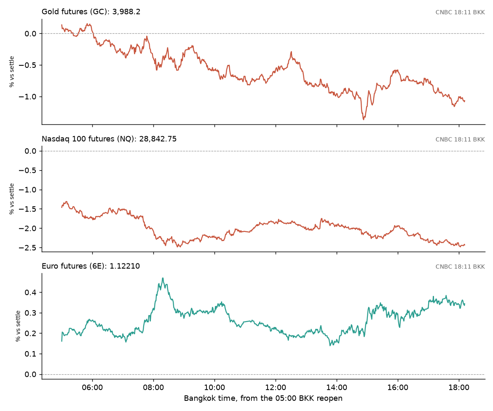

April · Market Intel, pre-NY · Fri Oct 30, 2026 · ~18:30 BKK / ~07:30 New York
Headline: the tech sell-off deepened through the European morning. Nasdaq futures are down 2.43% and just made a new session low. Gold is down 1.07% at 3,988.2, below $4,000, while the euro is up 0.35%.
So what: US wage costs at 19:30 BKK and the 20:30 BKK open decide whether month-end buyers step in, or the AI-spending scare runs another day.
Shorter edition, published late: this run started at 18:21 BKK, nine minutes before the 18:30 BKK deadline, so this is a trimmed, fully checked brief published after the deadline: scoreboard, main three, what changed, calendar, levels and X. The full chessboard from the pre-London brief still stands.
1) Main instruments The three main contracts since the 05:00 BKK reopen, as a % move from Thursday's settle. Nasdaq slid again after 16:00 BKK; gold made its low at 14:53 BKK. |
(Futures quotes are CNBC at 18:11 BKK and match the Yahoo feed. Ranges use 1-minute bars from the 05:00 BKK reopen, cut at 18:22 BKK.)
- Gold futures (GC, Dec): 3,988.2, −1.07%, at 18:11 BKK. Driver: firm December Fed hike bets and dearer oil outweigh falling yields (pre-London sourcing: CNBC/Reuters).
- Settle 4,031.4. Range 3,974.7 (14:53 BKK) to 4,038.2 (05:50 BKK). Gold has now lost $4,000 on futures and sits about 14 points above the low.
- Nasdaq 100 futures (NQ, Dec): 28,842.75, −2.43%, at 18:11 BKK. Driver: Amazon and Intel results deepened worries that AI spending is outrunning returns (Reuters).
- Settle 29,562.00. Range 28,818.75 (18:04 BKK, a fresh low) to 29,180.00 (05:00 BKK). The 200-day average (a long-run trend line traders watch) is about 28,060 on Yahoo daily closes, the next big reference below.
- Euro futures (6E, Dec): 1.12210, +0.35%, at 18:11 BKK. Driver: euro-area growth beat forecasts and the dollar is slipping with yields.
- Settle 1.11820. Range 1.11955 (13:48 BKK) to 1.12345 (08:18 BKK).
- Takeaway: stocks are still selling, gold is still heavy, and the euro is the quiet winner.
Context. The dollar index (DXY, the dollar against six major currencies) is 101.655, −0.37%. The 10-year US yield is 4.914%, down 7.5 basis points (a basis point is 0.01 percentage point). The VIX (the "fear gauge" from S&P 500 options) is 18.45, +7.27%. All three are CNBC at 18:21 BKK. US oil (CL, Dec) is 104.18, +2.14%, range 102.43 to 104.99. S&P 500 futures (ES) are 7,675.00, −1.02%, range 7,665.25 to 7,713.00. Both are CNBC at 18:11 BKK. Bitcoin is $77,597, −3.92% versus CNBC's prior close (CNBC/Coin Metrics, 18:21 BKK).
2) What changed since pre-London
- Europe grew faster than expected. Euro-area GDP rose 0.4% in Q3, against 0.2% forecast; France shrank 0.1% (High: Eurostat, CNBC). Ireland's 5.5% jump flattered the total (Eurostat, Reuters).
- The Bank of Japan left the door open for December. Ueda said the bank will review its outlook and risks at every meeting, including the next one, and that the pace of hikes depends on data; Reuters reads that as a hike possible as soon as December (High: Reuters via CNA). The yen is 157.15 per dollar (CNBC, 18:21 BKK).
- Oil majors beat. Exxon adjusted EPS $4.23 vs $4.08 expected; Chevron $5.28 vs $4.89 (High: company releases, CNBC/LSEG). Refining profits did the work. Exxon is about +1.5% and Chevron +1.4% premarket (Yahoo, 18:13–18:21 BKK).
- Tech losers widened. Amazon is −6.3% premarket and Nvidia −3.0% (Yahoo, 18:21 BKK). Reddit is −19% after its CEO warned daily unique visitors could fall by a low double-digit % in Q4 (Reuters). Twilio is −17%: it beat, but guided slower Q4 growth (Investing.com).
- Iran. Qatari mediators returned to Tehran to push a US-Iran deal, coordinated with Washington (High: Reuters; IRNA confirmed the visit). That cuts against Thursday's strike talk.
- Takeaway: good news outside tech, bad news inside it. Nasdaq is where the stress sits.
3) Rates, FX and oil
- US yields fell further: 2-year 4.571%, 10-year 4.914%, 30-year 5.284% (CNBC, 18:21 BKK). Bond prices rise when yields fall; investors are hiding in Treasuries.
- Europe: German 10-year 3.331%, UK 10-year 5.277% (CNBC, 18:21 BKK).
- Oil: WTI is up 2.14%. Brent's expiring December contract is 117.75, +2.50% (CNBC, 18:11 BKK). The Hormuz risk keeps a floor under crude.
- Mentor: gold usually likes falling yields. Today it isn't getting that help, because traders still expect the Fed to raise rates in December. That makes interest-paying assets look better than gold. Fed odds were not re-checked this run; the pre-London reading (about 75% to 80% for a December hike, via FXStreet and BlockBeats) is from about 13:00 BKK.
- Takeaway: falling yields aren't saving gold or tech.
4) Calendar (BKK times, ET in brackets)
- 19:30 (08:30 ET): US Employment Cost Index, Q3 (wage and benefit costs). Forecast 0.8%, prior 0.9% (Octa).
- 20:30 (09:30 ET): US stocks open.
- 20:45 (09:45 ET): Chicago PMI (a business survey) (eOption).
- Already out: AbbVie reported before the open (Newsquawk earnings list); it is +4.2% premarket (Yahoo, 18:14 BKK).
- 23:10 (12:10 ET): ECB chief economist Lane (Octa).
- Apple reports Monday, Nov 2, after the US close (Apple via MacRumors).
- Takeaway: a hot wage number would lift hike odds and hit gold and Nasdaq together.
5) Scenarios and levels (not advice)
- Wage costs soft (0.7% or less): hike odds ease. Gold could reclaim 4,000 and test 4,038.2; NQ could bounce toward 29,180.
- In line (0.8%): tech news drives. NQ stays heavy near 28,818.75; a break opens the way toward the 200-day average near 28,060.
- Hot (0.9% or more): yields bounce. Gold risks breaking 3,974.7; the euro gives back toward 1.11955.
- Levels: GC 3,974.7 / 4,000 / 4,038.2. NQ 28,818.75 / 29,180. 6E 1.11955 / 1.12345.
- Takeaway: 19:30 BKK sets the tone; the open confirms it.
6) Undercovered
- The BoJ will sell its stock ETFs faster. It will sell about ¥860B a year from January 2027, up from about ¥330B, cutting the time to sell its holdings from about 112 years to 43 (Reuters, MUFG Research). That is a slow, steady seller for Japanese stocks.
- Exxon earned more from refining than from pumping oil. Adjusted downstream earnings were $9.0B against $7.3B upstream (Reuters). War-driven diesel shortages are the cause.
7) What's trending on X (~18:22 BKK)
- Trend list (as returned by X for the US location id): Good Friday, RED Friday, Binance, Happy Halloween Eve, TRM Labs, SAFU, DevOps. The list also mixed in Thai celebrity tags, so treat its location as uncertain.
- Signal: the Binance hack is still the only market story trending. TRM Labs (a blockchain-tracing firm) and SAFU (Binance's user-protection fund) point to traders tracking the stolen funds and the refund promise (my read).
- Data point: original posts mentioning Amazon with capex, "free cash flow" or AI hit 4,906 on Oct 29 (UTC), against 2,870 and 2,944 on Oct 27 and 28, and 2,521 so far on Oct 30 to 18:22 BKK (X post counts, excluding reposts).
- Noise: holiday tags, Halloween and celebrity fan trends.
Bottom line
Tech is still the weak spot, and gold has lost $4,000 on futures. For Jim: GC 3,988.2 sits about 14 points above the 3,974.7 low; 4,000 is now resistance. NQ is at its session low near 28,818.75. 6E at 1.12210 holds in the upper part of its range, under 1.12345. Interpretive note: month-end rebalancing can bring buyers after a big fall. That is possible, not a forecast.
Confidence: futures, yields, DXY, VIX, Brent, Bitcoin: CNBC, time-stamped, cross-checked with Yahoo. Session ranges: Yahoo 1-minute bars from 05:00 BKK, matching CNBC highs and lows. Premarket stocks: Yahoo, time-stamped. Earnings: company releases plus CNBC/LSEG, Reuters, Investing.com. GDP: Eurostat. BoJ: Reuters, FXStreet, MUFG. Iran: Reuters, IRNA. ECI forecast and Lane time: Octa. Fed hike odds were not re-checked this run. Removed for lack of time to verify: spot gold, German CPI, Fed speakers, Colgate's results. |